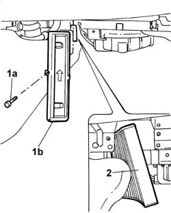

5010B08 Climate control system outside air POLLEN FILTER - R.R.
- Path
- Procedures > 50 auxiliary units > 5010 CLIMATE CONTROL - MISCELLANEOUS > 5010B CLIMATE CONTROL SYSTEM AIR DUCTS AND PIPES > 5010B08 Climate control system outside air POLLEN FILTER - R.R.
- Kind
- repair procedure (removal / refitting; the operation number is the code)
- Applies to
- all engines; all production periods
- Interactive page
- https://sloeber94.github.io/elrnDB-lThss/en/#/79045
Applies to: all engines; all production periods
 Removing
Removing
 Refitting
RefittingSee in Op. 7040A60 UNDER FACIA TRIM - R.R.
- Remove the foam rubber.
1. Remove the bolt (1a) for the purifying filter casing (1b) flap.
- Open the flap.
2. Remove the purifying filter.

Applies to: all engines; all production periods
Refitting
Removing- Insert the purifying filter in the filter casing.
- Close the cover and tighten the bolt.
- Reposition the foam rubber.